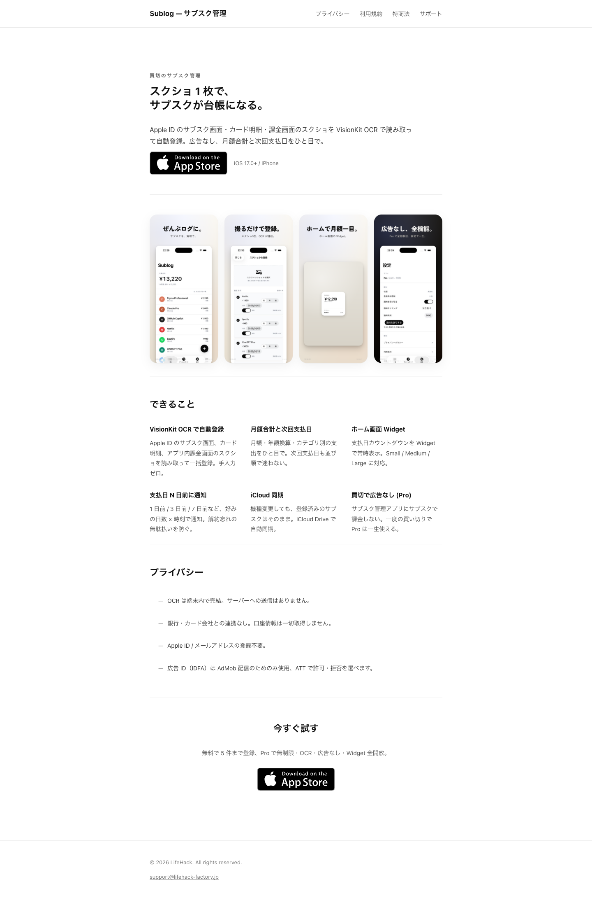

Sublog LP — hiroooo.github.io/sublog/
対象画面

軸別評価
重大な指摘
実際 render される font は 2-3 種だが、fallback chain が長いと FOIT/FOUT のリスク + 何が表示されるか予測困難。design token 不在の兆候。
和文 Zen Kaku Gothic New + 英文 SF Pro/-apple-system + monospace の 3 階層に集約。CSS 変数 (--font-sans / --font-serif / --font-mono) 化
18, 28, 36px のような 8pt grid 外の値が混じり、余白がランダムに感じられる。ミニマル路線では特に余白の整列度がブランド印象を決める。
4pt / 8pt grid の token (4, 8, 16, 24, 32, 48, 64) に集約。CSS 変数 (--space-1 ~ --space-16) で統一
改善余地
OLED で滲み / コントラスト過大で長文読了で目が疲れる。2026 は gray-900 (#111-1a) が標準、ミニマル路線でも黒は微トーン落としが現代的。
本文色を #111111 / #1a1a1a に置換。h1 だけ #000 残すのは可
Linear / Vercel / Stripe など 2026 SaaS は hero に必ず大型 visual を置く。Sublog は文字 + 小さな App Store ボタンのみで、iPhone モックが scroll 後に出現。Editorial 狙いなら OK だが SaaS としてはコンバージョン弱め。
案 A: iPhone モック 4 枚を hero 内に移動 (above-the-fold で Brand Promise を即体感) / 案 B: hero に animated GIF / Lottie で OCR→台帳の流れを 3 秒ループ
6 つの feature カードが全部テキストのみで、視線が止まる視覚要素がない。スクロール中に「文字の壁」に見える瞬間が生じる。
Lucide / Heroicons (outline) で 6 つ 24px line icon を統一スタイルで配置。色は accent 1 色 (例: #1a73e8 / #5b6cff 等) でリズム作る
section ごとに 18 / 28 / 36px のような半端値が混じり、縦のリズム感が揺らぐ。spacing token を一度敷くと一気に整う。
CSS 変数 :root に --space-2/4/6/8/12/16 を定義、全 padding/margin を変数経由に書き換え
細かい指摘
long-form では目の疲労、2026 は gray-50 (#fafafa) / off-white が標準。
body background を #fafafa / #f7f7f7 に。card のみ #ffffff で対比を作る
2026 標準は最低限 prefers-color-scheme: dark で OS 設定追従。Pro 訴求の「広告なし」と並んで dark-mode 対応はミニマル LP では効きが良い。
@media (prefers-color-scheme: dark) で body bg #0b0b0d, fg #e8e8ee に切替 (CSS 変数化済なら 1 ブロックで完結)
良かった点
「スクショ 1 枚で、サブスクが台帳になる。」 Hero copy が短く強い (15 字以内 + 比喩で具体)
参考サイト
付録 JSON
完全版は issues.json。Claude に「issues.json を読んで重大な指摘から順に修正して」と頼むと改修対話に入れる。